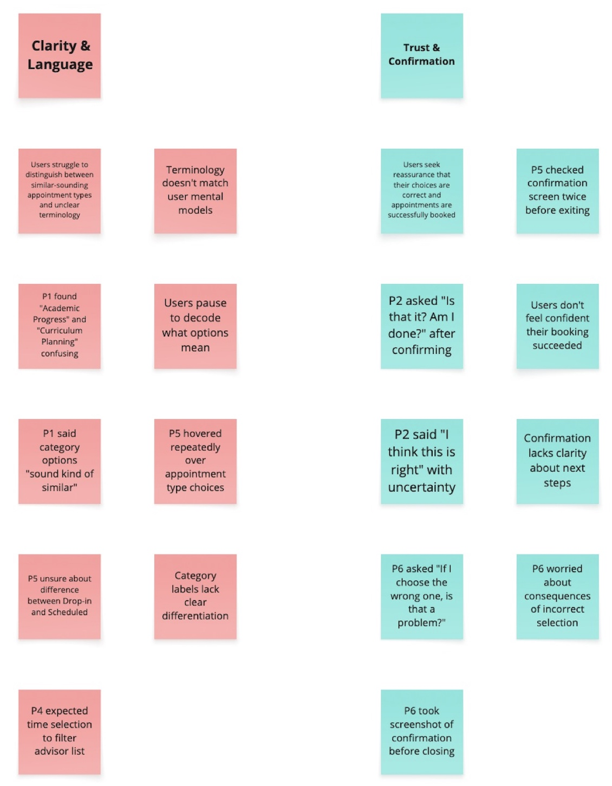
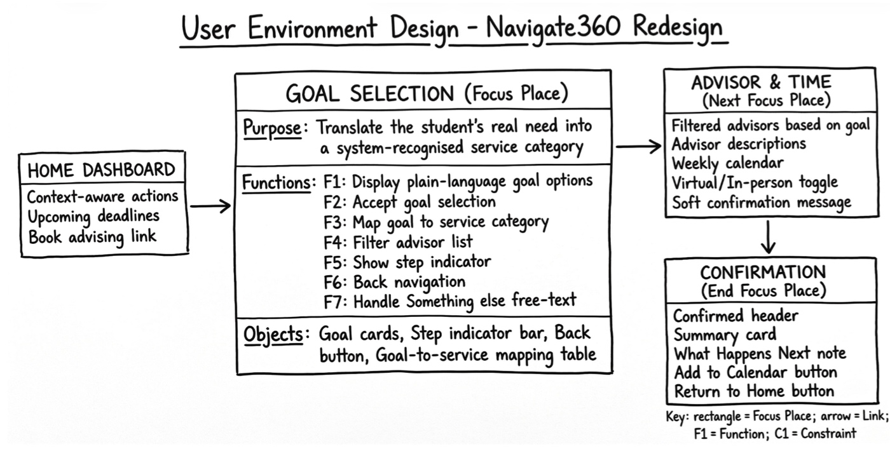
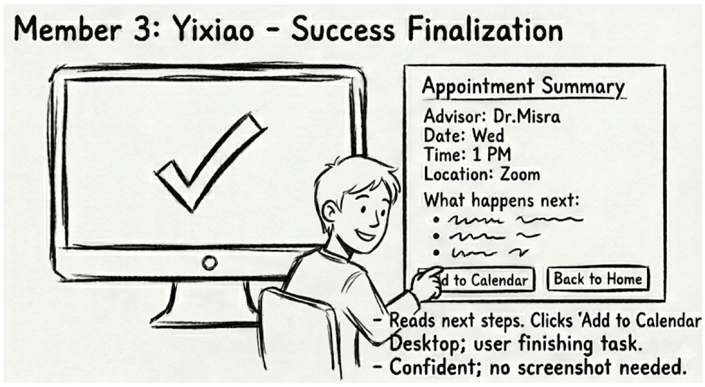
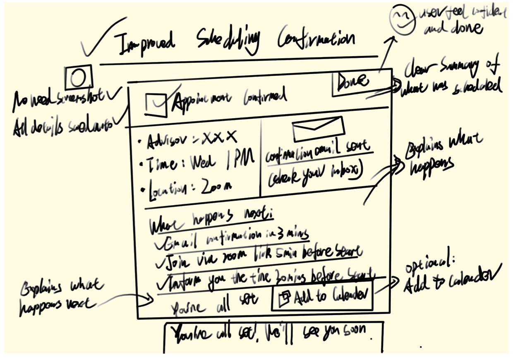
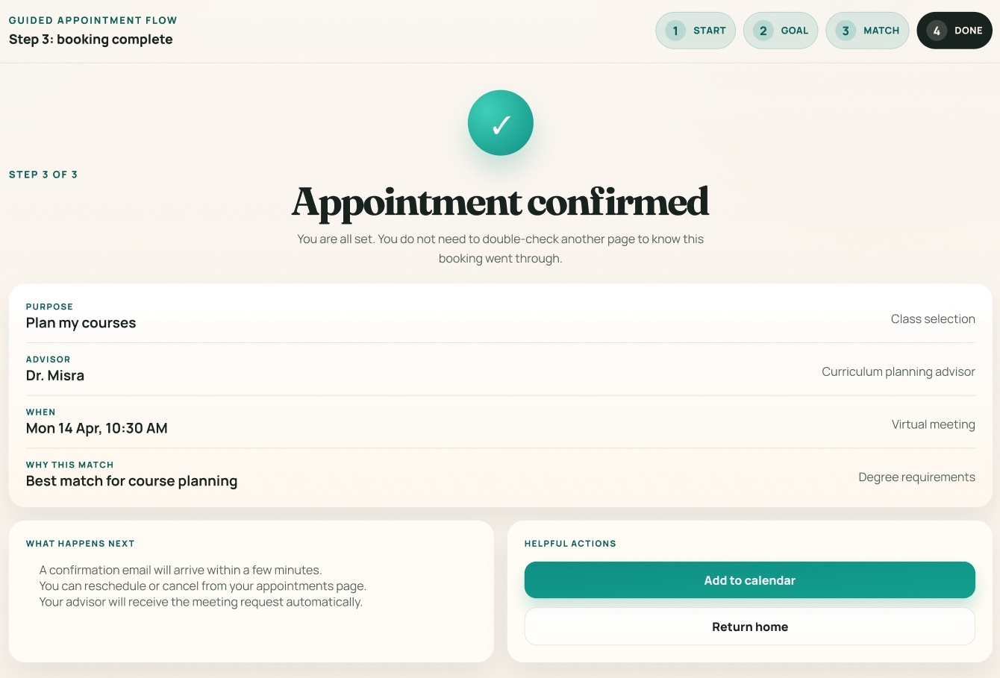
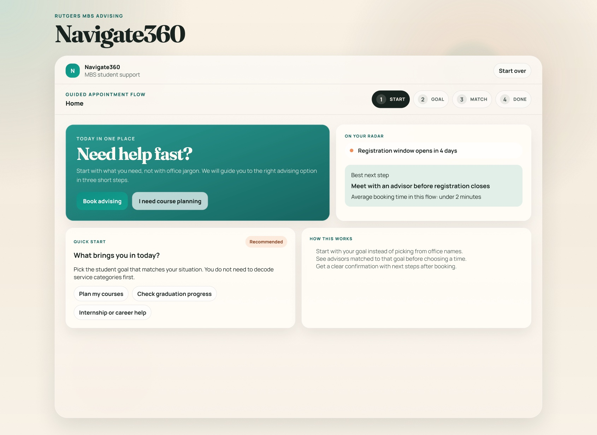
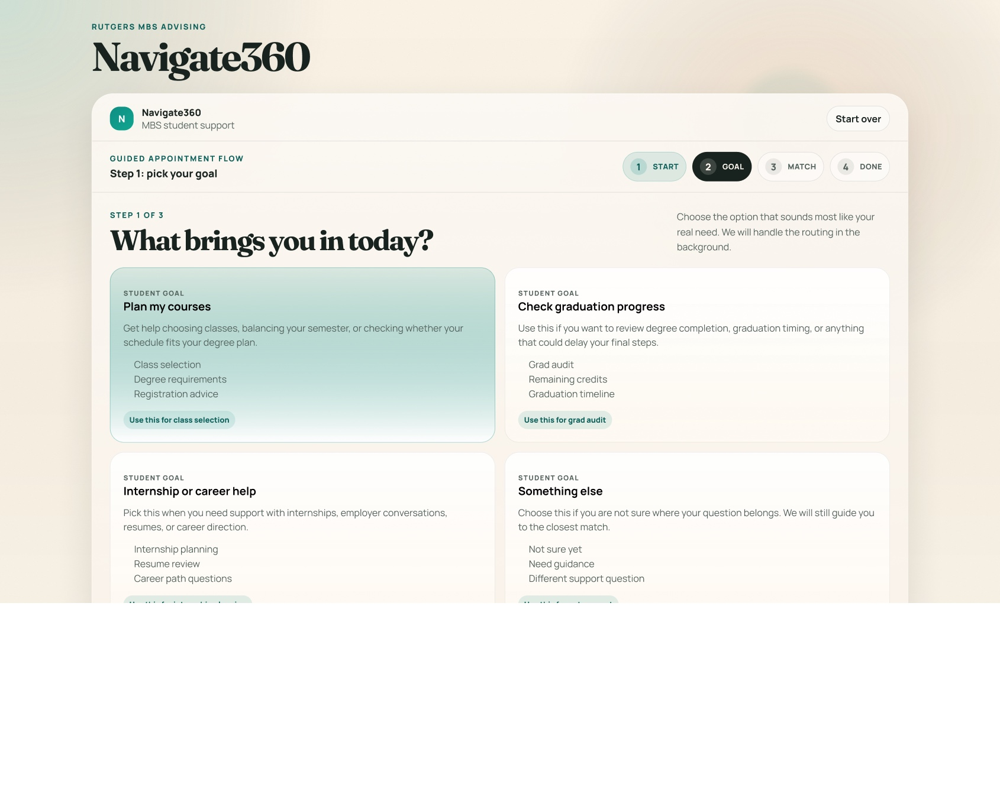
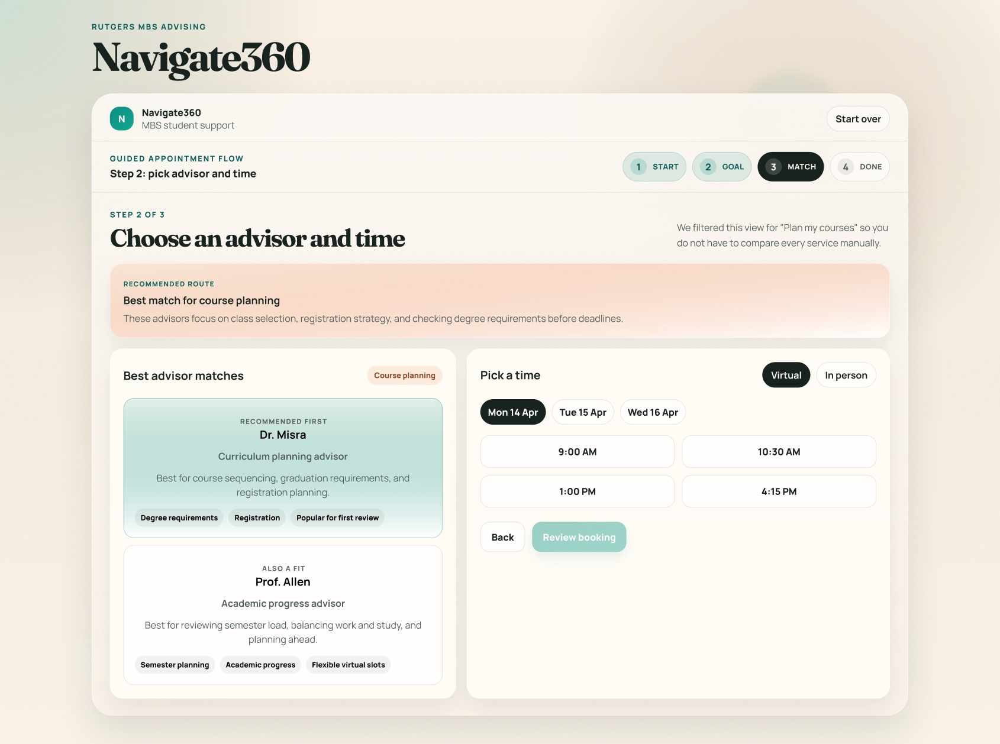

Guessed what institutional labels meant
Use goals students recognize, such as “Plan my courses.”
Rutgers MBS · Contextual Design
Make it clear when an advising appointment is booked.
Our four-person Rutgers MBS team redesigned the Navigate360 advising appointment flow for MBS students. I led the confirmation experience, from storyboard to prototype.
Desktop prototype and mobile design exploration from Figma
Research & problem discovery
After a pilot, we observed six Rutgers MBS students booking an advising appointment in the existing system, then asked them about the moments they hesitated or checked again. All six completed the task.
Use goals students recognize, such as “Plan my courses.”
Use the selected goal to narrow the advisor and time options.
Show that the booking went through and give students the details they need before leaving.

Design process
We used User Environment Design to map each decision to a screen. Goal Selection would translate a student’s need into a service category. Confirmation would give them what they needed to finish.

My contribution
I led the Success Finalization storyboard and designed the Confirmation focus place. I wanted students to know their booking had gone through, check the details in one place and leave knowing what to expect.


Before · Existing flow
One participant asked this while rereading the confirmation details.
Original confirmation screenshot pending · Observation source: team report
After · Figma prototype detail

A checkmark and “Appointment confirmed” give the result first.
The “Done” indicator shows where the flow ends.
Purpose, advisor, time and meeting format are together.
Explain what to expect and where to change the booking.
Keep saving the appointment an optional action.
Team prototype
The team kept the redesign to one task. Students start with what they need, see relevant advisors and times, then get a clear confirmation.



The mobile exploration keeps the same order and stacks the goal choices and booking summary for narrow screens. These Figma screens illustrate the direction.
What the prototype test showed
Five Rutgers MBS students booked a course-registration advising appointment in a moderated think-aloud test. Three also took part in the earlier research.
All six participants in the original study also completed the task. In the prototype test, students hesitated less, and all five moved through advisor and time selection without backtracking.
Results are from one five-person course prototype study. The Figma screens above include later explorations.
Iteration & reflection
My takeaway
A task can be technically complete while still feeling incomplete to the user.
I now design the last screen around what people need to know before they can confidently move on.